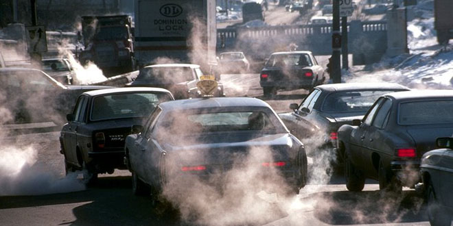

Home
Introduction
Fossil Fules
Clearing Forest
Fertilization
Global Warming
Conclusion
In 50 years, the planet will not be the same as it is today. Rapid global warming and climate change are taking away the habitats of many species all over the world because, humans are putting too much carbon dioxide from cars into the air, the mass production of cutting down trees has resulted in a dramatic climate change, and the increase in usage of chemical fertilizers on croplands. Global warming is a gradual increase in the overall temperature of the earth’s atmosphere generally attributed to the greenhouse effect caused by increased levels of carbon dioxide, chlorofluorocarbon, and other pollutants. According to Climate NASA the earth has always been rising after the abrupt end of the last ice age which was about 7,000 years ago, but now it is rising faster than ever. If humans keep living like they do now people in the future will face many problems.
< !-- Images on animals stuck and car polution --> 